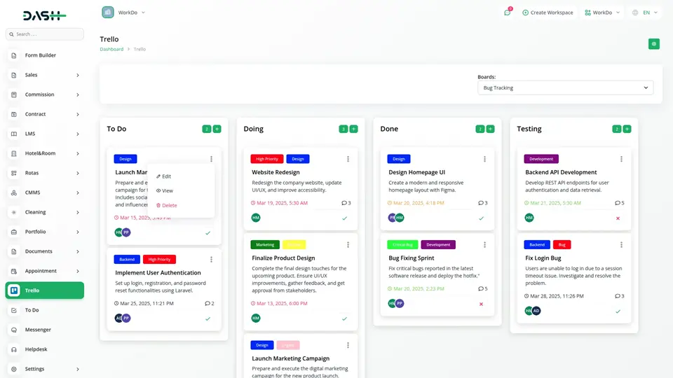

E-commerce Sostenible

Descripció: Plataforma de comerç electrònic especialitzada en
productes ecològics i sostenibles. Inclou sistema de pagament integrat i gestió
d'inventari en temps real.
Tecnologies: HTML5, CSS3, JavaScript, API REST
Enllaç: Veure el projecte en
viu
Dashboard Analític

Descripció: Panell de control interactiu per visualitzar dades en
temps real amb gràfics dinàmics i informes personalitzables per a empreses.
Tecnologies: React, CSS Grid, Chart.js
Enllaç: Veure el projecte en
viu
App de Gestió de Tasques

Descripció: Aplicació web per organitzar tasques personals i
professionals amb sistema de prioritats, recordatoris i col·laboració en equip.
Tecnologies: HTML5, CSS3, JavaScript Vanilla, LocalStorage
Enllaç: Veure el projecte en
viu